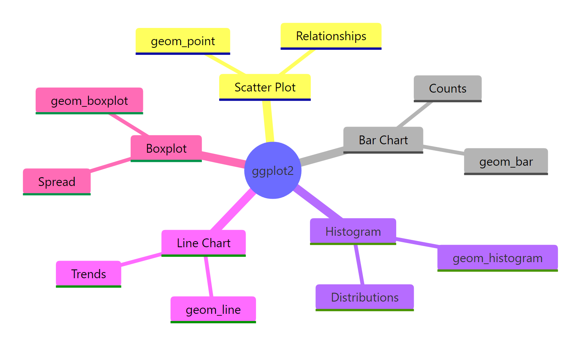
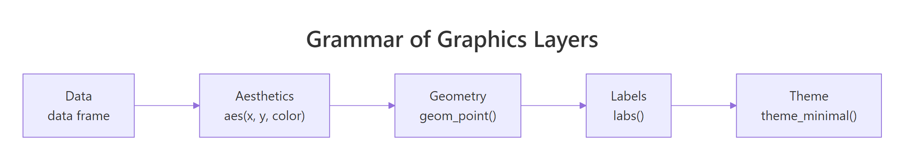
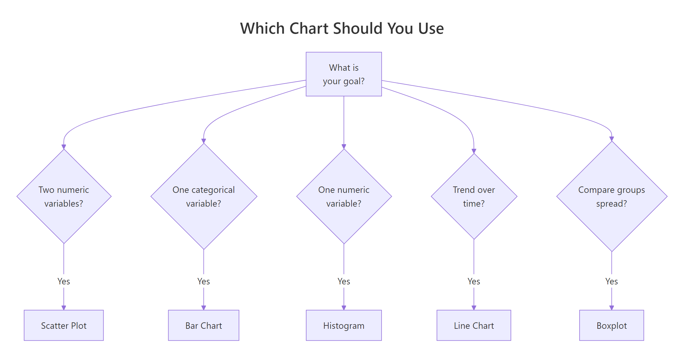

ggplot2 for Beginners: Build 5 Real Charts in 30 Minutes — Zero Experience Needed
ggplot2 is R's most popular plotting package — it turns data frames into publication-quality charts with a consistent, layered grammar you can learn in one sitting.
Introduction
You have data in R and you want a chart. Base R's plot() function works, but the code gets messy the moment you need colors, labels, or facets. There is a better way.
ggplot2 is a tidyverse package that implements Leland Wilkinson's Grammar of Graphics. The core idea is simple: every chart is built from the same three ingredients — your data, a mapping of columns to visual properties, and a geometric shape that draws the result. Once you learn the pattern, you can build any chart.
In this tutorial you will build five real charts from scratch: a scatter plot, a bar chart, a histogram, a line chart, and a boxplot. Every line of code is explained, and every block runs right here in your browser. No installation needed.

Figure 1: The five chart types you will build in this tutorial.
How Does the Grammar of Graphics Work?
Every ggplot2 chart follows the same pattern. You start with data, map columns to visual properties called aesthetics, and then pick a geometry to draw. The code looks like this: ggplot(data, aes(...)) + geom_*().
Think of it as stacking layers. The first layer is your data. The second layer says "put this column on the x-axis and that column on the y-axis." The third layer draws points, bars, or lines. You can keep adding layers for labels, colors, and themes.
Let's see the pattern in action. The mpg dataset is built into ggplot2 and contains fuel economy data for 234 cars. We will plot engine displacement against highway mileage.
The ggplot() call sets up the data and axes. The + operator adds a layer. geom_point() draws one dot per row. That three-part pattern is the same for every chart you will build today.

Figure 2: Every ggplot2 chart follows the same five-layer pattern.
ggplot(data, aes()) + geom_*(), you only need to swap the geometry to get a completely different chart type.Try it: Create a scatter plot of mpg with cty (city mileage) on the y-axis and displ on the x-axis using geom_point().
Click to reveal solution
Explanation: Replace NULL with geom_point() to draw dots. The pattern is identical to the highway mileage example.
How Do You Make a Scatter Plot with geom_point()?
Scatter plots show the relationship between two numeric variables. Each row in your data becomes one point. You can map extra columns to color, size, or shape to reveal patterns within groups.
Let's color each point by the car's class column. This reveals which vehicle types get better mileage.
The color = class mapping inside aes() tells ggplot2 to assign a unique color to each category. The legend appears automatically.
Now let's add size mapping and proper labels. Mapping size to a numeric column scales each point proportionally.
The alpha = 0.7 argument makes dots slightly transparent, so you can see where points stack on top of each other. The labs() layer adds human-readable axis labels and a title.
alpha between 0.3 and 0.7 reveals the density underneath.Try it: Create a scatter plot of displ vs hwy, color the points by drv (drive type), and add a title "Drive Type Comparison".
Click to reveal solution
Explanation: color = drv maps drive type to color. labs(title = ...) adds the title above the chart.
How Do You Build a Bar Chart with geom_bar()?
Bar charts count how many rows fall into each category. They are the go-to chart for summarizing categorical data. In ggplot2, geom_bar() counts rows for you — just map the category to the x-axis.
Let's count how many cars belong to each class.
Each bar's height equals the number of rows where class matches that label. You did not supply a y-axis — geom_bar() computed the count automatically.
To break each bar into subgroups, map a second variable to fill. The position argument controls whether bars stack or stand side by side.
Stacked bars show the total per class while revealing subgroup proportions. Dodged bars make it easier to compare subgroup sizes directly.
geom_col(aes(x = category, y = total)). Using geom_bar() on pre-aggregated data double-counts.Try it: Create a bar chart that counts how many cars have each number of cylinders (cyl), with bars filled by drv.
Click to reveal solution
Explanation: factor(cyl) treats cylinder count as a category. fill = drv colors the bar segments. geom_bar() handles the counting.
How Do You Create a Histogram with geom_histogram()?
A histogram shows how a single numeric variable is distributed. It splits the range into bins and counts how many values fall into each bin. The shape of the histogram tells you whether the data is skewed, symmetric, or multimodal.
Let's look at the distribution of highway mileage.
ggplot2 picks 30 bins by default and prints a message telling you to choose a better binwidth. Always set binwidth explicitly so your chart tells an honest story.
Here is the same histogram with a custom bin width and fill color.
Setting binwidth = 2 means each bar covers a 2-MPG range. The fill argument colors the bars, and color adds a border. A narrower binwidth reveals more detail; a wider one smooths out noise.
(max - min) / 20 and adjust.Try it: Create a histogram of cty (city mileage) with binwidth = 3 and a fill color of your choice.
Click to reveal solution
Explanation: binwidth = 3 sets each bin to cover 3 MPG. Any fill color string works — try "darkgreen", "#3366CC", or other R color names.
How Do You Plot a Line Chart with geom_line()?
Line charts show trends over an ordered variable, usually time. The economics dataset built into ggplot2 contains monthly US economic data from 1967 to 2015. Let's plot the unemployment count over time.
geom_line() connects data points in x-order. Because date is already a Date column, ggplot2 formats the x-axis automatically.
Adding geom_point() on top highlights individual data points. This is useful when data is sparse.
Notice that you can stack multiple geom layers with +. Each layer draws on top of the previous one, so the points appear over the line.
geom_path() which connects points in row order.Try it: Plot the personal savings rate (psavert) from the economics dataset over date as a line chart. Add a title.
Click to reveal solution
Explanation: psavert is a numeric column in economics. geom_line() connects the monthly observations. The savings rate clearly trends downward.
How Do You Draw a Boxplot with geom_boxplot()?
Boxplots show the median, quartiles, and outliers of a numeric variable. They are the best chart for comparing distributions across groups because they pack five summary statistics into one shape.
The thick line in the middle is the median. The box edges are the 25th and 75th percentiles. The whiskers extend to 1.5 times the interquartile range. Points beyond the whiskers are outliers.
Let's compare highway mileage across vehicle classes.
Each box represents one vehicle class. You can instantly see which classes get better mileage and which have more variability.
Adding fill and coord_flip() makes the chart easier to read when category names are long.
coord_flip() swaps the x and y axes so the category labels display horizontally. Setting show.legend = FALSE removes the legend, which is redundant when the axis already labels each group.

Figure 3: Pick the right chart type based on your data and goal.
Try it: Create a boxplot of cty (city mileage) grouped by drv (drive type).
Click to reveal solution
Explanation: x = drv creates one box per drive type. y = cty is the numeric variable being summarized.
How Do You Customize Colors, Labels, and Themes?
You know how to build five chart types. Now let's make them look professional. ggplot2 has three customization layers: labs() for text, scale_*() for colors and axes, and theme_*() for the overall appearance.
Let's build a polished scatter plot step by step.
scale_color_brewer(palette = "Set2") swaps the default colors for a palette designed for readability. theme_minimal() strips the grey background and gridlines to a clean white canvas.
Faceting splits one chart into multiple panels, one per group. Use facet_wrap() to create a grid of small multiples.
facet_wrap(~ drv) creates one panel per unique value of drv. This is powerful for spotting patterns within subgroups that a single chart would obscure.
theme_bw() (black-and-white borders), theme_light(), and theme_classic() (no gridlines).Try it: Take any scatter plot from this tutorial, apply theme_bw(), and add a subtitle using labs(subtitle = ...).
Click to reveal solution
Explanation: theme_bw() adds clean box borders. labs(subtitle = ...) places smaller text directly under the title.
Common Mistakes and How to Fix Them
Mistake 1: Forgetting the + between layers
❌ Wrong:
Why it is wrong: Without +, R treats the second line as a separate command. It tries to call geom_point() on its own, which fails.
✅ Correct:
Mistake 2: Using geom_bar() on pre-aggregated data
❌ Wrong:
Why it is wrong: geom_bar() counts the number of rows per category. Your data has one row per fruit, so every bar is height 1.
✅ Correct:
Mistake 3: Putting aes() in the wrong place
❌ Wrong:
Why it is wrong: Column mappings must go inside aes(). Without aes(), R looks for objects named displ and hwy in your workspace instead of columns in the data frame.
✅ Correct:
Mistake 4: Not setting binwidth in geom_histogram()
❌ Wrong:
Why it is wrong: The default bin count splits the data into 30 equally spaced bins regardless of range. This can create misleading peaks or hide real patterns.
✅ Correct:
Practice Exercises
Exercise 1: Scatter plot with facets
Build a scatter plot of mpg with displ on the x-axis and hwy on the y-axis. Color the points by class, add a title and axis labels, apply theme_minimal(), and facet the chart by drv.
Click to reveal solution
Explanation: This combines five concepts: geom_point for the scatter, labs for text, scale_color_brewer for the palette, theme_minimal for styling, and facet_wrap for panels.
Exercise 2: Dodged bar chart with the diamonds dataset
Using the diamonds dataset (built into ggplot2), create a bar chart that counts how many diamonds exist in each cut category. Fill the bars by color (diamond color grade). Use position = "dodge" to place bars side by side. Add labels and apply theme_bw().
Click to reveal solution
Explanation: position = "dodge" prevents stacking. The diamonds dataset has 53,940 rows, so the counts are large. theme_bw() gives clean borders.
Exercise 3: Histogram and boxplot for the same variable
Create two separate charts for the hwy column from mpg. First, build a histogram with binwidth = 2 and steelblue fill. Second, build a horizontal boxplot of hwy (no grouping — use y = hwy with an empty string for x). Use consistent colors in both charts.
Click to reveal solution
Explanation: Using aes(x = "", y = hwy) with coord_flip() creates a single horizontal boxplot. Both charts use steelblue for visual consistency.
Putting It All Together
Let's build one polished chart from scratch that uses everything you learned. We will load the data, explore it, and create a publication-ready scatter plot.
This chart combines six concepts: geom_point() for the scatter, geom_smooth() for a trend line, labs() for text, scale_color_brewer() for colors, theme_minimal() for layout, and theme() for fine-tuning text styles.
The dashed trend line (method = "lm") fits a linear regression through all points. It confirms what the scatter suggests: bigger engines get worse mileage. The 2-seater class (sports cars) bucks the trend because they are lightweight despite large engines.
Summary
Here is a quick-reference table for the five chart types you learned.
| Chart Type | Geometry | Use Case | Key Aesthetic | One-Line Code |
|---|---|---|---|---|
| Scatter plot | geom_point() |
Relationship between two numbers | color, size |
ggplot(df, aes(x, y)) + geom_point() |
| Bar chart | geom_bar() |
Count categories | fill |
ggplot(df, aes(x)) + geom_bar() |
| Histogram | geom_histogram() |
Distribution of one number | binwidth |
ggplot(df, aes(x)) + geom_histogram(binwidth=N) |
| Line chart | geom_line() |
Trends over time | color, linewidth |
ggplot(df, aes(x, y)) + geom_line() |
| Boxplot | geom_boxplot() |
Compare group distributions | fill |
ggplot(df, aes(x, y)) + geom_boxplot() |
Every chart follows the same pattern: ggplot(data, aes(...)) + geom_*(). Add labs() for text, scale_*() for colors, and theme_*() for styling.
FAQ
What is the difference between geom_bar() and geom_col()?
geom_bar() counts rows automatically — you only map x. geom_col() uses a y value you provide — you map both x and y. Use geom_bar() for raw data and geom_col() for pre-aggregated summaries.
How do I save a ggplot chart to a file?
Use ggsave(). After creating your plot, call ggsave("my_chart.png", width = 8, height = 5, dpi = 300). It saves the last displayed plot by default, or you can pass the plot object: ggsave("my_chart.png", plot = p).
Can I combine multiple chart types in one plot?
Yes. Just add multiple geom layers with +. For example, geom_point() + geom_smooth() overlays a trend line on a scatter plot. Each geom can have its own aesthetics if you put aes() inside the geom call.
How do I change the font size in ggplot2?
Use the theme() layer. For example: theme(axis.text = element_text(size = 12), plot.title = element_text(size = 16)). Each text element (title, subtitle, axis labels, legend text) can be sized independently.
What is the difference between color and fill?
color controls the outline of shapes (points, lines, bar borders). fill controls the interior of filled shapes (bars, boxes, areas). For geom_point(), use color. For geom_bar() and geom_boxplot(), use fill for the main color and color for the border.
References
- Wickham, H. — ggplot2: Elegant Graphics for Data Analysis, 3rd Edition. Springer (2024). Link
- ggplot2 documentation — tidyverse.org. Link
- Wickham, H., Cetinkaya-Rundel, M., Grolemund, G. — R for Data Science, 2nd Edition. Chapter 2: Data Visualization. Link
- RStudio — Data Visualization with ggplot2 Cheat Sheet. Link
- Wilkinson, L. — The Grammar of Graphics. Springer (2005).
- R Graph Gallery — ggplot2 section. Link
- Scherer, C. — A ggplot2 Tutorial for Beautiful Plotting in R (2019). Link
Continue Learning
Now that you can build five chart types, here are your next steps on r-statistics.co:
- ggplot2 Tutorial 2 - Customizing Themes — Master the
theme()function, build custom themes from scratch, and control every visual detail of your charts. - Top 50 ggplot2 Visualizations — Explore 50 chart types with complete code: area plots, density plots, bubble charts, waffle charts, and more.